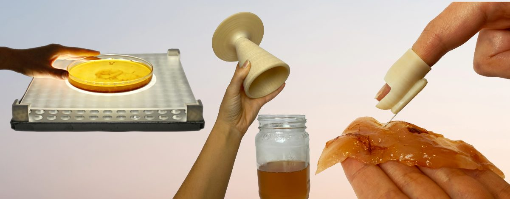
Sensory engagement probes are objects designed to viscerally emphasize the organism’s livingness and agency, call attention to the human–organism relationship, and reveal our human-centered leanings and biases. This work sets out to explore what a more-than-human design practice with living organisms might look like. Countering the human-centered design practice of utilizing living organisms—in this project, kombucha scoby—as a material (e.g., “vegan” leather), this work contributes a making practice of designerly objects that invite experiencing the kombucha scoby as a living organism.
These felt experiences include:
- listening to the kombucha fermentation bubbles
- touching the biofilm layer to examine its texture and thickness
- watching the slow growth of scoby layers over weeks
Published as a full paper at CHI 2023.
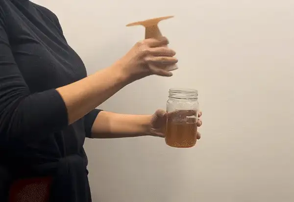

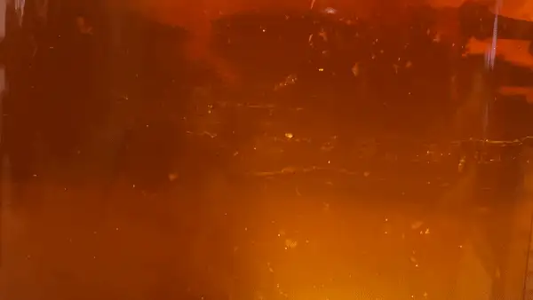
This work began as a material exploration in the Fall 2020 Soft Object class taught by Laura Devendorf and Sasha De Koninck. I was interested in exploring textile fabrication with kombucha scoby and experimented with craft and digital fabrication methods.
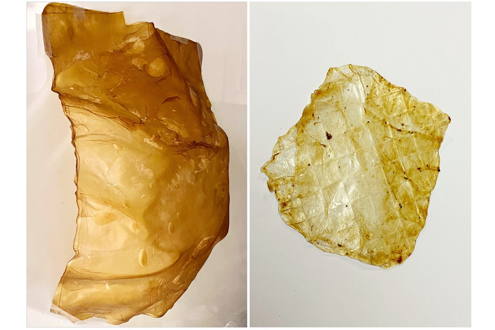
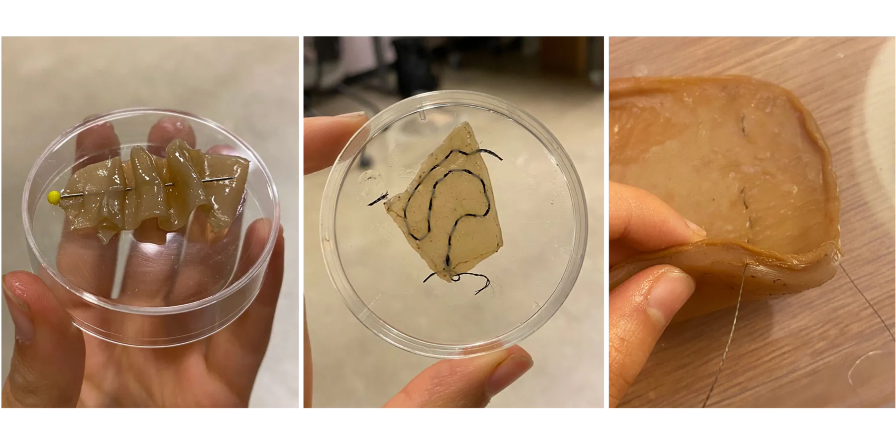
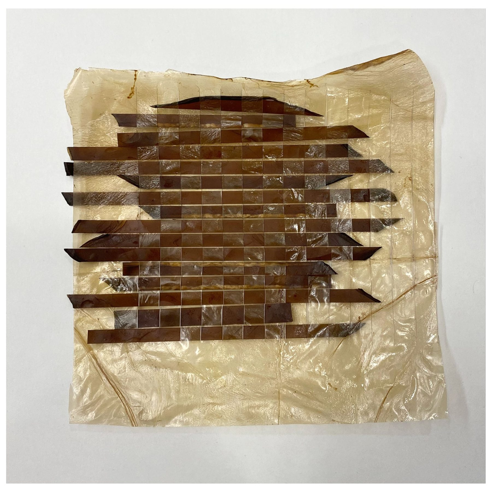
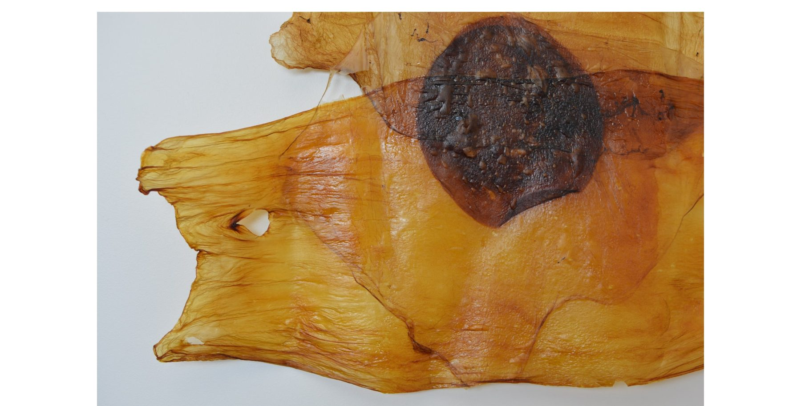
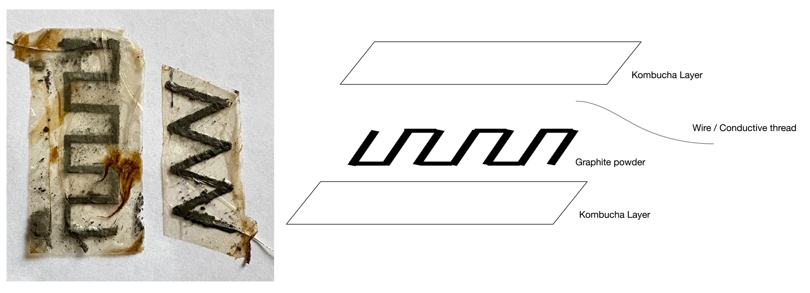
The kombucha scoby as textile material exploration evolved into an autoethnographic account of reflective writings and creating “sensory engagement probes,” a making practice of designerly objects that manifest the latent dialogue between the human and the nonhuman—in this case, kombucha scoby.
This work contributes a case study of decentering the narrow human-centered goals that exist in design processes, and incorporating the nonhuman’s livingness and agency as valuable input and direction: a shift from “designing with living matter” to a “design-with” inquiry. In this inquiry, we center our subjective, felt experiences in order to elicit emotional responses and critical reflection on the process of closely designing with nonhumans.
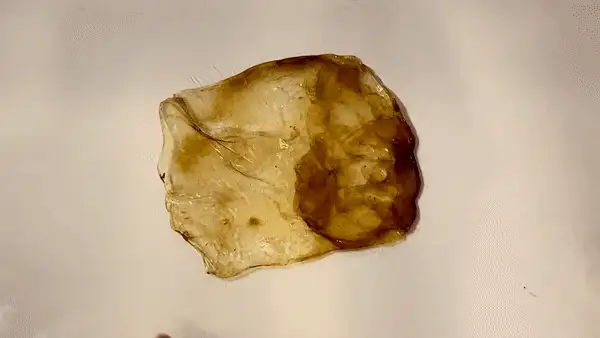
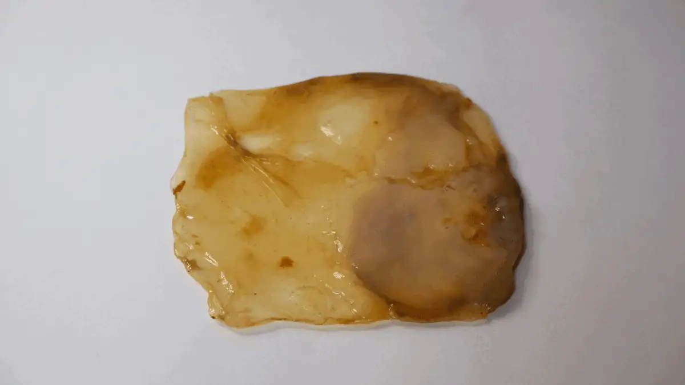
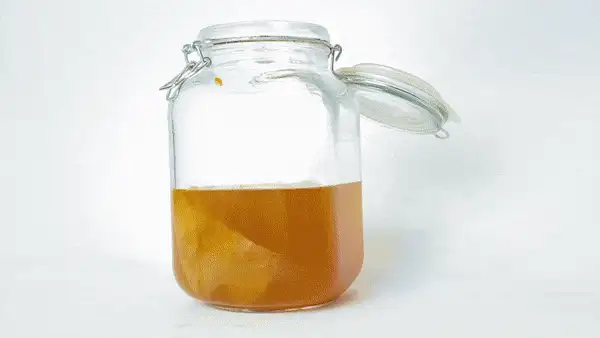
Designing sensory engagement probes: a practice of designing objects for being present with nonhumans through sensory experiences that might surface during growing, caring for, and designing with organisms. The sensory engagement probes reveal the interconnectedness present between us, the human-designer, and the nonhuman.
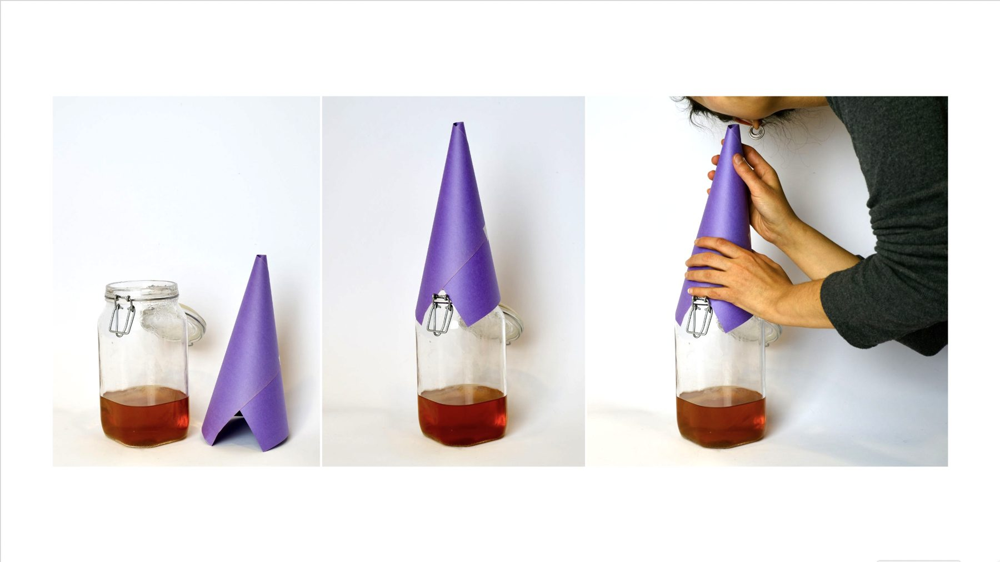
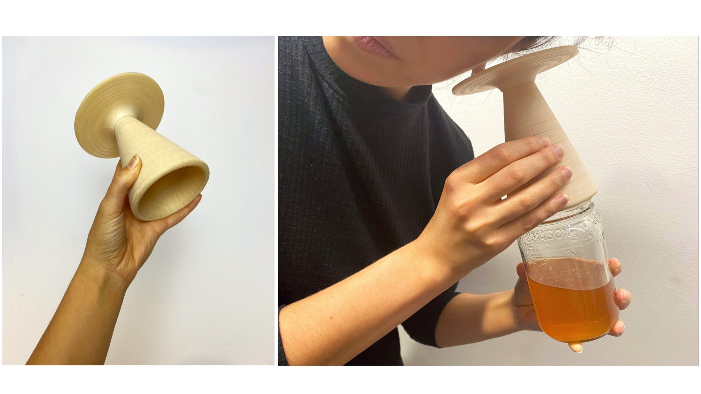
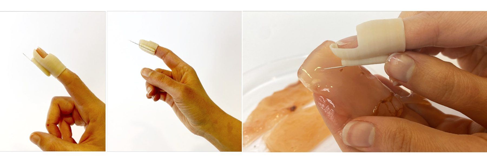
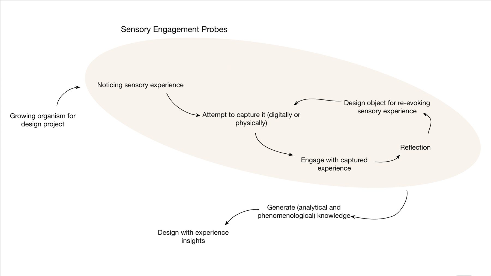